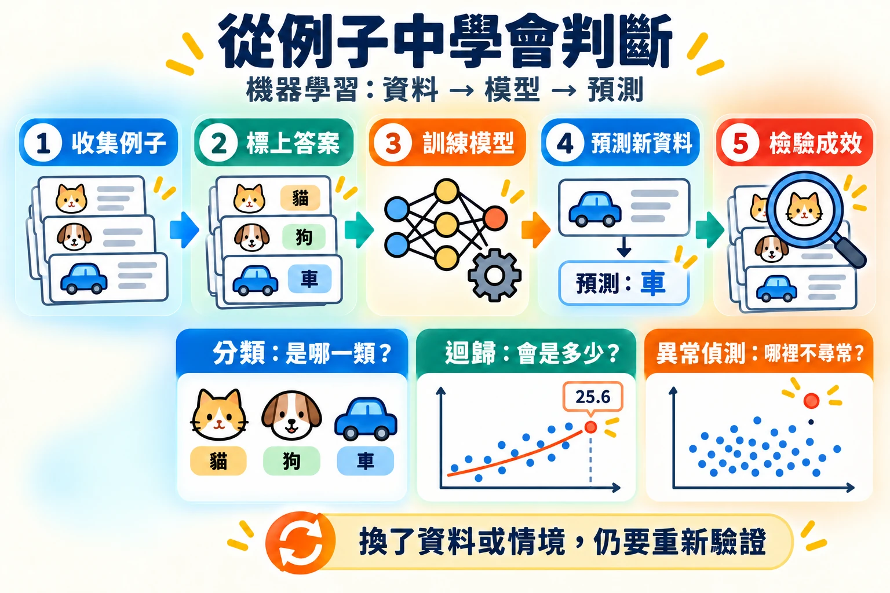
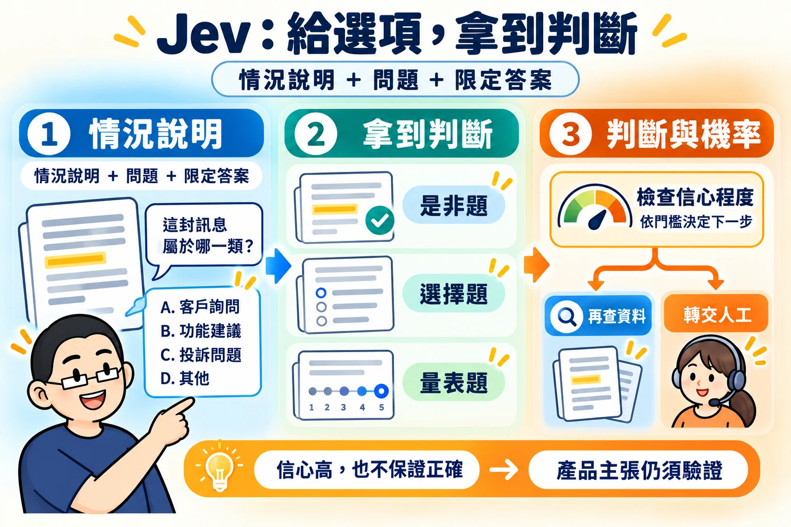

第一天上午 · 模組 01
模組 01｜讓 AI 協助教學工作：從 Chatbot 到 Agentic AI
這是兩日工作坊的起點。我們從 Chatbot 的問答、整理與初稿功能出發，認識本機端與雲端 AI Agent 的工作方式；再用低風險、虛構或已去識別化的教學與照護情境完成第一次任務測試，練習檢查遺漏、誤解與待確認事項。各位老師與場域夥伴不必先會寫程式，但要能說清楚需求、核對資料，並判斷成果是否可用：這正是後面建構 Smart TA、發布教材與評量、帶學生做 AI 專題時，最常用到的能力。
01學習目標與階段成果
能分辨「我要一個回答」、「我要整理好的成果」與「我要可操作的工具」三種交辦；能說出 Chatbot 與 AI Agent 的差別；能用使用者、輸入、規則、輸出與驗收五個欄位寫出需求，並留下一份自己教學或場域工作的任務構想，作為模組 02 之後實作的起點。
- 模組 01認識 AI Agent，寫出任務構想
- 模組 02在 VS Code 建立工作空間
- 模組 03把做事方法保存成 Skill
- 模組 04以指定教材建構 Smart TA
- 模組 05發布教材
- 模組 06–07帶學生完成 AI 專題
- 說明辨別式 AI、生成式 AI、Chatbot 與 AI Agent 各自處理什麼任務。
- 依交付物選擇 Chat、Work 或 AI Agent（例如 Codex）的工作方式，並知道本機端與雲端 Agent 的差別。
- 完成至少一個 Chat 練習與一個 Work 練習，並逐項對照來源檢查成果。
- 能指出 AI 成果中的遺漏、補造、誤解與待確認事項。
- 寫出一份五欄需求表與一份自己的任務構想。
02ChatGPT 之前的 AI：機器學習與辨別式 AI

2022 年底 ChatGPT 推出後，「AI」幾乎成了「會聊天、會寫東西的 AI」的代名詞。其實在那之前，AI 早已在身邊工作：信箱自動過濾垃圾郵件、銀行在刷卡瞬間判斷是否盜刷、手機用臉部辨識解鎖。在照護領域，也有研究與產品嘗試依生命徵象變化提醒需要優先評估的個案、估計跌倒或壓力性損傷的風險，或用感測器偵測離床。這些 AI 大多不產生新內容，而是看了資料之後，給出一個判斷。這類 AI 稱為辨別式 AI（Discriminative AI），背後的方法就是機器學習。
機器學習：讓電腦從例子中找出規則
傳統的程式由人把規則一條條寫出來，例如「體溫超過設定值就標記提醒」。但很多判斷牽涉的因素太多、太細，人寫不完。機器學習換一個做法：準備大量「過去的例子＋當時的正確答案」，讓電腦自己反覆調整，找出能預測答案的規則。學好的規則稱為模型。
- ① 收集資料過去的評估紀錄、生命徵象、活動量等例子
- ② 標上答案每個例子後來的結果，例如是否發生跌倒
- ③ 訓練模型電腦反覆比對「猜的」和「正確答案」，逐步修正
- ④ 預測新資料遇到新的例子時，給出判斷
- ⑤ 檢驗成效用沒看過的資料計算準確率或誤差
辨別式 AI 與生成式 AI 有什麼不同
兩者都用機器學習訓練，差別在於要回答的問題和交出的成果。辨別式 AI 回答「這是哪一類？」或「會是多少？」；生成式 AI 則依照指示產生新的文字、圖片或程式。
| 比較重點 | 辨別式 AI（ChatGPT 之前的主流） | 生成式 AI（例如 ChatGPT） |
|---|---|---|
| 回答的問題 | 「這位住民的跌倒風險是高還是低？」「這筆生命徵象是否需要提醒？」 | 「把這段衛教內容改寫成長者易懂的版本」「把這週的教學重點整理成授課提綱」 |
| 輸出 | 一個類別、分數或數字 | 一段新的文字、圖片、表格或程式 |
| 常見應用 | 風險分級、異常數值提醒、影像辨識、照護需求量預測 | 教材初稿、資料整理、會議摘要、題目初稿、製作網頁工具 |
| 怎麼判斷好壞 | 和正確答案比對，計算準確率或誤差 | 多半沒有唯一答案，需要人判斷內容是否正確、合用 |
| 能做的事 | 通常只會一件事：訓練它回答的那個問題 | 同一個模型可以處理許多不同的任務 |
判斷屬於哪一類
這位住民的跌倒風險屬於高、中或低？這則家屬留言是詢問探視、費用還是照護？
預測一個數字
下個月日照中心大約會有多少新個案？某時段大約需要幾位照護人力？
找出不尋常的資料
這位住民今晚的離床次數是否明顯多於平常？這筆血壓和過去的數值相比是否突然改變？

用打磚塊遊戲看辨別式 AI 怎麼學
下面的打磚塊遊戲有兩種模式：手動由你控制球拍；電腦（機器學習）則交給一個小型神經網路。這個神經網路只學一件事：看到球目前的位置和方向，預測球會落在哪裡。輸出是一個數字（落點的橫向位置），所以它是一個做「迴歸」的辨別式 AI。它不會聊天，也不會產生新內容，但會越玩越準。
遊戲中的每個元素，都能對應到機器學習的名詞，也能對應到照護情境。下表第三欄是假設性的教學示意，不代表任何已驗證的系統：
| 遊戲中看到的 | 機器學習的說法 | 換成照護情境（預測住民夜間是否需要優先巡視） |
|---|---|---|
| 球的位置 x、y 與方向 dx、dy | 特徵（Feature）：模型用來判斷的輸入資料 | 近期跌倒紀錄、活動能力評估、用藥變化、生命徵象 |
| 球實際落下的位置 | 標籤（Label）：正確答案 | 當晚實際是否發生需要介入的事件 |
| 每一次球落下 | 一筆訓練資料 | 一筆過去的照護紀錄及其後續結果 |
| 「梯度更新次數」持續增加 | 訓練：依照猜錯的程度調整模型 | 用歷史紀錄建立風險預測模型 |
| 藍色三角形（預測落點） | 預測（Prediction） | 模型對某位住民提出「建議優先巡視」的提醒 |
| 預測誤差圖、AI 接球率 | 模型評估：準不準？ | 被提醒的住民中，真正需要介入的比例；需要介入卻被漏掉的比例 |
| 儲存、匯出、匯入模型 | 部署：把訓練好的模型拿去使用 | 經驗證與審核後放進照護資訊系統，作為照護人員的參考提醒 |
這個遊戲裡的答案不需要人工標記：球落下時，遊戲本身就知道正確落點，模型可以立刻拿來學習。真實的照護資料通常沒有這麼方便，每一筆答案都需要專業人員記錄或追蹤確認，資料也涉及個資與倫理審查，標上答案往往是最花時間的步驟。
開啟遊戲，點選「電腦（機器學習）」，再按「重置模型」。剛開始模型的參數是隨機的，球拍幾乎接不到球。
把「遊戲速度」拉到 16× 左右，觀察「誤差中位數」和「AI 接球率」。誤差圖上的紅點（接不到）會逐漸被藍點（接得到）取代：資料越多，模型越準。
按「重置模型」後改按「預先訓練 2,000 球」，模型一次看完 2,000 球的資料再上場，比較它和邊玩邊學的差別。
切回「手動」模式自己玩一會兒。你打出的每一球也會成為訓練資料，再切回電腦模式看看它學到什麼。
按「匯入檔案…」，選擇剛才下載的已訓練模型。電腦模式會立刻變得很準：這就是把訓練好的模型部署出去使用。
它只會被訓練的那一件事。遊戲中的模型只學過「球往下掉時會落在哪裡」，所以球往上飛時，球拍只會回到中間等待；它也不會告訴你為什麼這樣判斷。模型的品質取決於資料：用某一家機構或某一群住民訓練的模型，換了機構、族群或紀錄方式，表現可能變差，需要重新驗證。
ChatGPT 這類生成式 AI 也是用機器學習訓練出來的，只是它學的問題換成了「接下來最適合出現的文字是什麼」，並且用了大量文字資料。學會了這件事，同一個模型就能回答問題、整理資料、寫程式。下一節先看一個 2026 年的新例子，第 04 節再把這些 AI 使用方式放在一起比較。
03新趨勢：Jev，只做判斷的新一代 AI

2026 年 9 月，新創公司 TypeSafe AI 結束隱形期，宣布募得 4,000 萬美元種子資金，並發表第一個產品 Jev。執行長兼共同創辦人 Diogo Almeida 曾是 OpenAI 研究員，參與 ChatGPT 與 GPT-4 的研發。TypeSafe 把 Jev 稱為一種新的模型類別：System One Model。這個名稱借自心理學家康納曼（Daniel Kahneman）的說法：System 1 是快速、直覺的判斷，System 2 是緩慢、仔細的推理。Jev 不聊天、不寫文章，專門做快速的判斷，而且是給其他軟體呼叫使用的。
Jev 怎麼運作：先給選項，再回傳機率
軟體把一段「情況說明」和幾個問題一起交給 Jev，並事先限定可以接受的答案。Jev 不會寫出一段文字，而是回傳每個答案的機率，以及它對這次判斷的信心程度。官方提供三種題型（以下例子為教學示意）：
回答是或否
回傳「這句話成立」的機率。例如：這則學生提問是否超出本週教材範圍？
從選項中挑一個
每個選項各有一個機率。例如：這則家屬留言屬於探視、費用還是照護詢問？
在等級上評分
在「低、中、高」這類等級上給分數。例如：這份學生反思日誌對課堂目標的回應程度是低、中還是高？
因為每個答案都附有機率，使用 Jev 的系統可以設定門檻：信心夠高就自動處理，信心不夠就再查資料，或轉給人工判斷。官方舉的應用都是企業的大量重複流程，例如客服案件分類、發票審核、資安警示分級，以及檢查 AI Agent 的工作成果。
Jev、辨別式 AI 與生成式 AI 比一比
| 比較重點 | 傳統機器學習（辨別式 AI） | Jev（System One Model） | 生成式 AI（例如 ChatGPT） |
|---|---|---|---|
| 回答的問題 | 訓練時就決定好的一個問題 | 每次由軟體提出問題，答案限定在給定的選項內 | 幾乎任何問題或指令 |
| 輸入 | 整理好的數字或類別欄位（特徵） | 一段情況說明（例如一則訊息、一張單據的內容）加上問題與選項 | 自由的文字、圖片或檔案 |
| 輸出 | 類別、機率或數字 | 各選項的機率、是非機率或量表分數，並附信心程度 | 新產生的文字、圖片或程式 |
| 換一個新問題 | 要重新收集、標註資料，再訓練一個新模型 | 依官方說明，改寫問題與選項即可，不必重新訓練 | 改寫提示即可 |
| 速度 | 很快 | 官方宣稱不到 1 秒（數十到數百毫秒） | 較慢，複雜問題常需數秒以上 |
| 怎麼使用 | 嵌在系統裡自動運作 | 由程式或 AI Agent 呼叫，結果交給下一個步驟 | 人直接對話，或由 AI Agent 使用 |
| 怎麼判斷好壞 | 和正確答案比對，計算準確率 | 除了準確率，還要看機率是否可信：說「八成把握」的判斷，實際上是否約八成正確 | 多半沒有唯一答案，需要人判斷 |
簡單地說：Jev 的輸出形式像辨別式 AI（只給判斷和機率），理解能力則來自大型語言模型（看得懂一段文字描述的情況，換問題不必重新訓練）。
用打磚塊遊戲來想 Jev
第 02 節打磚塊遊戲裡的神經網路，只會回答「球會落在哪裡」。如果想問它「這一球會不會漏接？」，就得重新設計輸出、重新收集資料、重新訓練，這就是傳統機器學習「一個模型只做一件事」的特性。Jev 的想法則是：準備一個通用的判斷模型，每次換一個問題和一組選項來問它。另外，遊戲中的模型只給出一個落點，沒有說自己有多少把握；Jev 會附上信心程度，讓系統決定什麼時候交給人處理。
Jev 目前只開放候補名單的開發者試用。速度、成本與判斷品質，都是公司自行公布的測試結果，尚待第三方驗證。看到新產品的宣傳數字時，先把它當成公司的「主張」，而不是已經證實的「事實」。在照護情境中，任何自動判斷都還需要專業人員確認。
AI 的發展不是「生成式 AI 取代辨別式 AI」。許多工作流程真正需要的，是快速、可以設定門檻的判斷。Jev 這類新模型，是把大型語言模型的理解能力，用「辨別式」的形式交付給軟體使用。
資料來源（整理於 2026 年 10 月）：SiliconANGLE、Business Wire 新聞稿、Width.ai 說明。
04Chatbot 與 AI Agent
這些名詞不是彼此完全分開的盒子；一個 Agent 可以使用生成式模型與推理能力，也可以透過對話接收你的要求。
| 概念 | 做什麼 | 教學情境 |
|---|---|---|
| 辨別式 AI／機器學習 | 依資料辨識、分類或預測。 | 把虛構的學生提問依主題分類；分類結果仍須核對。 |
| 生成式 AI | 依要求產生文字、圖像或其他內容。 | 起草一段長期照護服務類型的說明，再對照指定教材。 |
| Chatbot | 透過對話解釋、討論與追問。 | 問「學習目標與教學活動有什麼不同？」 |
| 推理模型 | 協助多步分析、比較與規劃。 | 逐步列出一份練習題組應涵蓋哪些概念，仍由你核對。 |
| AI Agent | 在授權範圍內讀取資料、操作工具並完成多步工作。 | 在指定資料夾讀取教材，建立學生閱讀版網頁，再依測試結果修改。 |
名稱不是正確性的保證。回答得流暢、步驟很多或網頁很漂亮，都不能代替來源核對與實際操作。
從 Chatbot 到 Agentic AI：差在哪裡
Chatbot 回答完一段話就等你下一句；AI Agent 則會依目標自己規劃步驟，讀取你允許的檔案、使用工具（建立檔案、執行程式、搜尋資料），看到結果後再決定下一步，直到交出成品。這種「規劃 → 行動 → 觀察 → 修正」的循環，就是 Agentic AI 的核心。
| 比較重點 | Chatbot | AI Agent |
|---|---|---|
| 工作單位 | 一問一答 | 一件有目標的任務 |
| 能碰到的東西 | 對話內容與你上傳的附件 | 你授權的資料夾、檔案與工具 |
| 交付物 | 對話中的文字 | 檔案、網頁、整理好的資料夾 |
| 你的角色 | 提問與追問 | 交辦、設定範圍、核准動作、驗收 |
| 主要風險 | 答錯或補造內容 | 除了答錯，還可能改到不該改的檔案；授權範圍要先說清楚 |
本機端與雲端 AI Agent
在服務商的環境裡工作
在網頁或 App 中交辦任務，Agent 在服務商準備的環境中讀取你上傳的資料、產出檔案。開始快、不必安裝，但資料會離開你的電腦，需確認機構對雲端服務與資料上傳的規定。
在你的電腦與資料夾裡工作
例如在 VS Code 中使用 Codex 或 Claude Code。Agent 直接讀寫你指定的專案資料夾，成果就是你電腦裡的檔案，方便保存、修改與發布。多數情況下模型仍在雲端運算，你交給它讀的內容依然會送到服務商。
這份資料可以交給 AI 嗎？是否虛構、已授權或已去識別化？Agent 可以讀寫哪些資料夾？哪些動作要先問我？模組 02 會在 VS Code 中實際設定本機端的工作空間。
Chat、Work、AI Agent：依交付物選擇

AI 的使用方式可分成三種工作角色：Chat 是對話夥伴，Work 是處理完整任務的助理，AI Agent（例如 Codex）是製作或修改數位工具的夥伴。這是幫助你交辦工作的分類，不表示每種工具只有一項能力。Chat 與 Work 都可能處理檔案；差別要看你需要的是來回討論，還是依一份資料完成多個整理步驟並交付成品。功能是否能用，仍以現場帳號、權限與工具介面為準。
| 比較重點 | Chat | Work | AI Agent（Codex 等） |
|---|---|---|---|
| 主要工作 | 解釋、回答、一起想。 | 依提供的資料完成一項完整整理工作。 | 在專案中製作或修改網頁工具。 |
| 你交代什麼 | 想理解的問題，接著依回答追問。 | 資料來源、整理步驟與成品格式。 | 專案位置、使用者、操作、規則與驗收。 |
| 教學工作例子 | 釐清學習目標與待辦事項的差別。 | 把虛構的教學小組會議紀錄整理成待辦表。 | 製作一份可勾選的課前準備清單網頁。 |
| 成果長什麼樣子 | 你聽得懂的解釋與可繼續追問的回答。 | 能保存、繼續編輯的摘要或表格。 | 自己能開啟並操作的網頁與專案檔案。 |
| 你怎麼檢查 | 能否用自己的話說明，是否符合教材。 | 每列是否對得上來源，有無補造資料。 | 自己操作、看結果、試錯填與邊界。 |
你負責教學與專業情境、需求與驗收；AI 協助實作。遇到看不懂的內容，請它用一般用語說明改了哪些檔案、如何開啟、要測試什麼。不要因 AI 說「完成」就省略檢查。
05教學任務與應用情境
請拿出為工作坊準備的材料：老師們選定的一門練習課程，或場域夥伴選定的一個工作情境。先從其中每週重複、耗時、成果容易核對的工作找起。下表把常見的教學與場域任務，對應到 AI 可以協助的部分、仍須由人決定的部分，以及本工作坊哪個模組會實作。
| 任務 | AI 可以協助 | 仍由教師或專業人員確認 | 對應模組 |
|---|---|---|---|
| 備課與教材整理 | 依指定教材整理重點、概念關係與授課提綱初稿 | 內容正確性、教學順序、是否符合課程目標 | 04、05 |
| 學生自學問答 | 只根據指定教材回答學生問題（Smart TA） | 回答是否超出教材、是否需要補充說明 | 04 |
| 學生閱讀版教材 | 把確認後的內容整理成網頁並發布 | 發布前的內容與授權 | 05 |
| 練習與評量 | 依教材起草題目、選項與解析 | 題目正確性、難度、與學習目標的對應 | 04（試題初稿） |
| 專題：照護場域排班 | 把條件整理成資料、規則、介面與測試案例 | 正式人力、勞動與照護安全決策 | 06 |
| 專題：照護紀錄草稿 | 把虛構或已去識別化的敘述整理成表單草稿，標示缺漏 | 草稿內容；不能自動送出或取代正式紀錄 | 07 |
| 會議與行政整理 | 把會議紀錄整理成待辦表、列出待確認事項 | 負責人與期限由團隊決定 | 01（本模組練習 C） |
低風險、可核對
虛構或公開資料；成果可以逐項對照來源；錯了也不會影響學生成績或照護對象。
專業內容與評量
教材、題目、衛教內容：AI 可起草，但必須由教師或專業人員審核後才使用。
真實個資與正式決策
真實病歷、可識別個人資料、未授權表單；正式排班、紀錄與照護決策。
06第一次任務測試
以下四個練習都只使用虛構的教學情境，用來熟悉交辦與檢查的手感，還不需要動用自己的教材。課堂先完成練習 A 與 C；練習 B 與 D 可依現場時間試做或課後練習。每個練習都先貼「提示 1」說明你的程度，再貼「提示 2」交辦任務。
練習 A：Chat 釐清一個教學概念
題目敘述 · Problem Statement
準備一門課時，常把「學習目標」和「待辦事項」寫在同一張清單裡。請用 Chat 把兩者分清楚。
建議 Prompt · Suggested Prompt
我完全沒有寫程式的經驗。請用一般用語說明，一次帶我做一小步，不要要求我讀懂或手動修改程式。
這一步先不要建立任何檔案，回覆「了解」，等我提出需求。我在準備一門長期照護課程，想弄懂「學習目標」和「待辦事項」有什麼不同。例子是：學生能說明長期照護的主要服務類型；週三前整理三份參考資料。
請先用兩三句話解釋，再指出這兩句各屬於哪一種。最後問我一題，讓我用自己的話回答；如果我答錯，請換一個日常例子說明。這一步只要討論，不用做網頁。可能的 AI 回覆｜練習 A
以下只是參考，每次的字句與排列都可能不同；請用完成檢核判斷，而不是逐字比對。
（提示 1 之後）了解。
（提示 2 之後）
學習目標描述學生在課程結束時應該能做到什麼；待辦事項是你為了達成目標要做的具體動作，通常會寫出期限或負責人。
「學生能說明長期照護的主要服務類型」是學習目標，因為它描述學生要達到的能力。
「週三前整理三份參考資料」是待辦事項，因為它是具體行動，還有期限和數量。
換你試試：「設計一份五題的課後小測驗」是學習目標，還是待辦事項？請用自己的話說明原因。預期成果 · Expected Outcome
回答區分「學生要達到的能力」與「教師要做的具體行動」，並出一題讓你自己判斷。
完成檢核 · Check it
不看 AI 回答，自己說出：「學生能說明服務類型是學習目標；週三前整理三份資料是待辦。」如果仍混淆，請它換一種說法，但保留相同例子。
練習 B：Chat 幫忙想測試方向
一份三項準備清單，勾選兩項與三項時應顯示不同結果。請 AI 幫忙說明為什麼這些狀態都值得測，再自己核對。這張清單會在練習 D 做成網頁。
我想做一份準備清單，共有讀懂題目、整理資料、準備驗收三項。每勾一項，完成數就增加一項，顯示 0／3 到 3／3。
先不要製作網頁，請幫我列出「怎麼操作、應該看到什麼」的對照表：全不勾、勾兩項、三項全勾、取消其中一項。請說明為什麼每一種都值得試，最後問我還想檢查哪一種情況。可能的 AI 回覆｜練習 B
以下只是參考，每次的字句與排列都可能不同；請用完成檢核判斷，而不是逐字比對。
怎麼操作｜應該看到什麼｜為什麼值得試
全部不勾｜0／3｜確認一開始就是零，沒有多算
勾兩項｜2／3｜確認部分完成時數字正確
三項全勾｜3／3｜確認全部完成時數字正確
從全勾取消一項｜2／3｜確認取消後數字會減少，不只會增加
想再確認一下：重新整理頁面後，你希望勾選還保留，還是回到 0／3？如果要保留，需要先說清楚。預期成果：勾選兩項 → 2／3，勾選三項 → 3／3。完成檢核：你能說出部分完成與全部完成的差別，並加測取消勾選後數量是否減少。
練習 C：Work 用提供的材料交付待辦表
題目敘述 · Problem Statement
你的教學小組有一段會議紀錄，希望整理成可保存的待辦表。下方就是全部來源；直接把紀錄與提示一起貼入工具即可。
教學小組會議紀錄（全部為虛構）
目標：完成「長期照護概論」第三週的課堂讀書交流。
教師甲：整理三份參考資料，期限為討論前。
教師乙：整理授課大綱，期限尚未決定。
待辦：確認投影設備，尚未分配負責人。
待辦：整理學生成果展示圖片，尚未決定負責人與期限。建議 Prompt · Suggested Prompt
請只根據上面的「教學小組會議紀錄」，整理成待辦表，欄位是工作項目、負責人、期限、待確認事項。
沒有寫明的負責人或期限請填「待確認」，不要替小組決定。最後列出還需要討論的事情。
先在對話中給我看表格，再保存成一份可下載、用一般文字編輯器就能閱讀的文件。請告訴我檔名、放在哪裡、怎麼開啟，不要只貼出程式或要求我自己轉檔。可能的 AI 回覆｜練習 C
以下只是參考，每次的字句與排列都可能不同；請用完成檢核判斷，而不是逐字比對。
工作項目｜負責人｜期限｜待確認事項
整理三份參考資料｜教師甲｜討論前｜無
整理授課大綱｜教師乙｜待確認｜期限尚未決定
確認投影設備｜待確認｜待確認｜尚未分配負責人
整理學生成果展示圖片｜待確認｜待確認｜尚未決定負責人與期限
還需要討論：
（1）授課大綱什麼時候完成。
（2）投影設備由誰確認、何時確認。
（3）學生成果展示圖片由誰整理、何時完成。
已保存成文字檔「待辦表.txt」，放在目前的工作資料夾。在資料夾中雙擊這個檔案，就會用記事本或文字編輯器打開，內容與上面的表格相同。預期成果 · Expected Outcome
四個待辦工作：整理參考資料、整理授課大綱、確認設備、整理展示圖片。只有第一項有明確期限；第三與第四項的負責人都待確認。
完成檢核 · Check it
- 逐列找回來源句子，確認沒有新增來源未提到的任務。
- 未決定的資料沒有被填成虛構姓名或日期。
- 打開交付的文件，確定表格內容與對話中的版本一致。
練習 D：AI Agent 製作可操作成果
請 AI Agent（例如 Codex）在指定資料夾做出練習 B 的準備清單網頁：三個勾選項目，並顯示完成數量。這與「請解釋工具怎麼做」不同：你要收到能開啟、能勾選、能再次修改的檔案。本機端 Agent 的資料夾設定會在模組 02 詳細練習。
請在目前的資料夾建立一個準備清單網頁 index.html，有讀懂題目、整理資料、準備驗收三個勾選項目，下方顯示「已完成 幾／3」；取消勾選也要更新。
在本機離線使用，不收集個人資料，不增加其他功能。
完成後請依練習 B 的四種情況自己試一次，再用一般用語告訴我檔名、怎麼開啟、我要怎麼測試。可能的 AI 回覆｜練習 D
以下只是參考，每次的字句、檔名與外觀都可能不同；請親自打開網頁操作，用完成檢核判斷。
已在你指定的資料夾建立準備清單網頁，檔名是 index.html。
怎麼開啟：
（1）打開你指定的資料夾。
（2）雙擊 index.html，它會用瀏覽器開啟。
畫面上有三個勾選項目：讀懂題目、整理資料、準備驗收，下方顯示「已完成 0／3」。
我已經依照練習 B 的對照表試過：
全部不勾｜已完成 0／3
勾兩項｜已完成 2／3
三項全勾｜已完成 3／3，全部完成！
從全勾取消一項｜已完成 2／3
目前關閉或重新整理頁面後，勾選會回到 0／3。如果你希望保留勾選，請告訴我，我再幫你加上。可能的成果 · Possible Result
下面是一個可能做出來的網頁。打開後依練習 B 的四種情況親自勾選，看完成數是否相同。你的版本外觀可以不一樣，只要操作結果一致即可。
完成檢核 · Check it
- 能在資料夾找到檔案，雙擊後用瀏覽器開啟。
- 依序試全不勾、勾兩項、三項全勾、取消一項，完成數分別是 0／3、2／3、3／3、2／3。
- 不要只相信 AI 說「已測試」；以你自己操作看到的結果為準。
07遺漏、誤解與待確認事項
AI 的成果常常「看起來很完整」，問題卻藏在細節裡。檢查時不要只讀一遍覺得通順，而是拿來源逐項對照，把問題分成四類：
| 問題類型 | 意思 | 怎麼找 |
|---|---|---|
| 遺漏 | 來源有，成果沒有。 | 從來源逐句往成果找，每一句都要有對應。 |
| 補造 | 來源沒有，成果卻出現，例如自行填入的姓名、日期或數字。 | 從成果逐列往來源找，找不到出處的就是補造。 |
| 誤解 | 把文意或你的要求理解錯，例如把「討論前」改寫成某個日期、把待辦當成目標。 | 對照原文用字；回頭看提示中的欄位與限制是否都做到。 |
| 待確認 | 來源資料不足，需要人決定的事。 | 成果應明確標示「待確認」，而不是替你決定。 |
練習 E：找出 AI 回覆中的問題
下面是另一次執行練習 C 時，可能出現的有問題回覆。請對照練習 C 的會議紀錄，找出至少三個問題並分類。
工作項目｜負責人｜期限｜待確認事項
整理三份參考資料｜教師甲｜10 月 20 日｜無
整理授課大綱｜教師乙｜待確認｜期限尚未決定
確認投影設備｜教師乙｜待確認｜無
所有工作都已分配完成，小組可以開始執行。參考答案｜練習 E
- 誤解：來源的期限是「討論前」，回覆改寫成「10 月 20 日」，來源並沒有這個日期。
- 補造：「確認投影設備」的負責人在來源中尚未分配，回覆卻填了「教師乙」。
- 遺漏：「整理學生成果展示圖片」整列不見了。
- 待確認被抹除：結尾說「所有工作都已分配完成」，與來源相反；投影設備與展示圖片的負責人、期限都應標示待確認。
請 AI 協助自我檢查
你可以請 AI 對照來源再檢查一次，作為第二道篩選；但 AI 的自我檢查也可能出錯，最後仍以你自己的逐項核對為準。
請把你剛才整理的表格和原始會議紀錄逐句對照，列出三類問題：
（1）來源有、表格沒有的內容；
（2）表格有、來源找不到出處的內容；
（3）來源沒有寫明、應標示待確認的地方。
每一點都請引用來源的原句。沒有問題的類別請寫「無」，不要為了列出問題而硬找。在教學或照護紀錄中，「補造」的日期、數值或觀察內容可能被誤當成事實。凡是成果中出現來源沒有的具體資訊，一律先視為待確認，由教師或專業人員判斷。
08動手實作：寫出需求與任務構想

- ① 目標製作一份準備清單，避免漏掉需要完成的事情。
- ② 使用情境沒有程式背景的教師或學生，在自己的筆電上練習與核對。
- ③ 預期成果標題、用途與項目清楚，勾選後顯示完成數量。
- ④ 完成條件與界線數量一致、取消勾選會更新、離線可用，不收集個人資料。
太簡略：「幫我做一個準備清單。」
更清楚：「請做一個給學生使用的準備清單網頁，提供讀懂題目、整理資料、準備驗收三個勾選項目，顯示完成數量。全不選是 0／3；選兩項是 2／3；取消勾選也要更新。在本機離線使用，不收集個人資料。」
步驟 1：用五欄寫出需求
先用 AI 對話釐清：誰會使用、怎麼操作、更新規則、畫面結果、如何確認。這一步只討論，不製作網頁。
我想做「準備清單」，項目是讀懂題目、整理資料、準備驗收。勾選後顯示已完成幾項；取消勾選後也要更新。
請先幫我整理一份五欄表：誰使用、怎麼操作、更新規則、畫面結果、如何確認。至少寫出全不勾、勾兩項、全勾三個例子和應有的完成數。
這一步先不要製作網頁。不增加登入、個人資料或其他功能。需要我補充時，請用簡單問題問我，不要假設我懂程式。可能的 AI 回覆｜需求表
以下只是參考，每次的字句與排列都可能不同；請用完成檢核判斷，而不是逐字比對。
誰使用｜準備課程或課堂練習的教師與學生，在自己的筆電上使用
怎麼操作｜勾選或取消勾選三個項目：讀懂題目、整理資料、準備驗收
更新規則｜每勾一項，完成數加一；每取消一項，完成數減一
畫面結果｜清單下方顯示「已完成 幾／3」
如何確認｜依下面的例子親自操作，看完成數是否相同
確認例子：
全部不勾｜已完成 0／3
勾兩項｜已完成 2／3
三項全勾｜已完成 3／3
從全勾取消一項｜已完成 2／3
想請你補充一件事：關閉或重新整理頁面後，勾選要保留，還是回到 0／3？需求表只寫「正確計算」還不夠。把至少三組操作與預期結果寫進去，AI 才能知道你如何確認「正確」。
步驟 2：寫下自己的任務構想
這是本模組的階段成果。以你為工作坊準備的課程或工作情境為對象，從第 05 節的表格挑一件事，用同樣的五欄思考，再加上資料來源與誰來確認。先寫草稿，不必一次完美；這份構想會跟著你進入模組 02 的工作空間，並在之後的 Smart TA、教材或專題模組中逐步實作。
我是［護理教師／長照場域夥伴］，想請 AI 協助的工作是：［用一兩句話描述，例如：把每週教材整理成學生閱讀版重點］。
可以提供的資料是：［例如：自己編寫的講義，已確認可使用；不含任何真實個資］。
請幫我整理成一份任務構想，欄位是：任務目標、使用者、輸入資料、AI 負責的步驟、交付成果、誰來確認、如何驗收（至少兩個具體例子）、不交給 AI 的部分。
資料沒有說明的地方請標示「待確認」並問我，不要自行假設。先不要製作任何檔案或網頁。| 欄位 | 寫什麼 | 例子（學生閱讀版重點） |
|---|---|---|
| 任務目標 | 要解決的一個小問題 | 每週課前提供學生一頁重點，方便預習 |
| 使用者 | 誰會用成果 | 修課學生；教師負責審核 |
| 輸入資料 | 可用、已授權或已去識別化的資料 | 教師自編講義，第三週 |
| AI 負責的步驟 | 讀什麼、整理什麼、產出什麼 | 只依講義整理五個重點與兩個自我檢核問題 |
| 交付成果 | 檔案、網頁或表格 | 一頁可列印的重點文件 |
| 誰來確認 | 負責審核的人 | 授課教師 |
| 如何驗收 | 具體可檢查的例子 | 每個重點都能在講義找到出處；沒有講義以外的內容 |
| 不交給 AI | 界線 | 是否發布、是否修改教學內容 |
09成果檢核與使用界線
每個練習都走同樣的四個階段
- ① 題目敘述知道誰要用、輸入什麼、要解決哪個小問題。
- ② 建議 Prompt把需求寫清楚，必要時依自己的情境改寫。
- ③ 預期成果先知道成果應有什麼、每種操作應得到什麼結果。
- ④ 完成檢核親自核對與操作，記錄問題與修改後結果。
離開本模組前，確認你有這些成果
- 能用自己的話說明 Chatbot 與 AI Agent、本機端與雲端 Agent 的差別。
- 練習 A 與練習 C 已完成，並逐列對照來源檢查過。
- 練習 E 找出至少三個問題，並能說出屬於遺漏、補造、誤解或待確認。
- 一份五欄需求表，包含至少三組操作與預期結果。
- 一份自己的任務構想，標出資料來源、誰來確認與不交給 AI 的部分。
這些練習只使用虛構資料。AI 起草的說明、整理的資料與建立的網頁，都要對照來源檢查。健康、護理與長照是練習情境；內容正確性、適用性、安全、倫理與法規，仍由相關領域教師、場域夥伴或具資格專業人員確認。
- 不使用真實病歷、可識別個人資料、未授權教材或未經確認的專業資料。
- 使用雲端服務前，先確認機構對資料上傳的規定。
- AI 產出的教材與評量，須經教師審核後才能給學生使用。
- 本講義的範例與原型僅供教學與討論，不宜直接用於真實場域或正式工作流程。